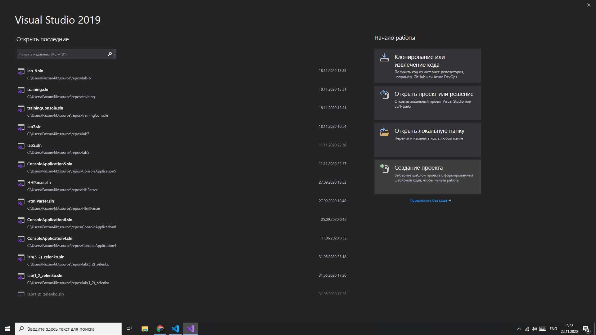

Visual Studio можно использовать для создания стандартных программ на языке C++.
Следуя инструкциям в этом пошаговом руководстве, можно создать проект, добавить
новый файл в проект, изменить файл, добавив код C++, а затем скомпилировать и
запустить программу с помощью Visual Studio.
Можно ввести собственную программу на языке C++ или использовать один из примеров
программ. Примером программы в этом пошаговом руководстве является консольное приложение.
Это приложение использует set контейнер в стандартной библиотеке C++.
Предварительные требования
Для выполнения этого пошагового руководства читатель должен владеть основами языка C++.
Создание проекта и Добавление исходного файла
Приведенные ниже инструкции немного отличаются в зависимости от
используемой версии Visual Studio. Чтобы ознакомиться с
документацией по предпочтительной версии Visual Studio,
используйте селектор Версия . Он находится в верхней части
оглавления на этой странице.

Создание проекта C++ в Visual Studio 2019
-
В главном меню выберите Файл > Создать > Проект,
чтобы открыть диалоговое окно Создание проекта.
-
В верхней части диалогового окна для параметра
Язык выберите значение C++ , для параметра
Платформа — значение Windows , а для параметра
Тип проекта — значение Консоль.
- В отфильтрованном списке типов проектов щелкните
Консольное приложение , а затем нажмите кнопку Далее.
На следующей странице введите имя проекта и при
необходимости укажите расположение проекта.
- Нажмите кнопку Создать , чтобы создать проект.
Добавить новый исходный файл
-
Если Обозреватель решений не отображается,
в меню вид выберите пункт Обозреватель решений.
-
Добавьте в проект новый исходный файл, как показано ниже.
-
В Обозреватель решений щелкните правой кнопкой мыши
папку исходные файлы , наведите указатель на пункт
добавить и выберите пункт новый элемент.
-
В узле код щелкните файл C++ (. cpp) , введите
имя файла и нажмите кнопку добавить.
-
CPP-файл появится в папке исходные файлы в Обозреватель решений,
а файл откроется в редакторе Visual Studio.
-
В файле в редакторе введите допустимую программу на языке
C++, которая использует стандартную библиотеку C++, или
скопируйте один из примеров программ и вставьте его в файл.
- Сохраните файл.
-
В меню Сборка выберите Собрать решение.
В окне вывод отображаются сведения о ходе компиляции,
например расположение журнала сборки и сообщение,
указывающее состояние сборки.
-
В меню Отладка выберите команду Запуск без отладки.
Если использовался пример программы, откроется окно командной
строки, в котором будет указано, найдены ли в наборе
определенные целые числа.